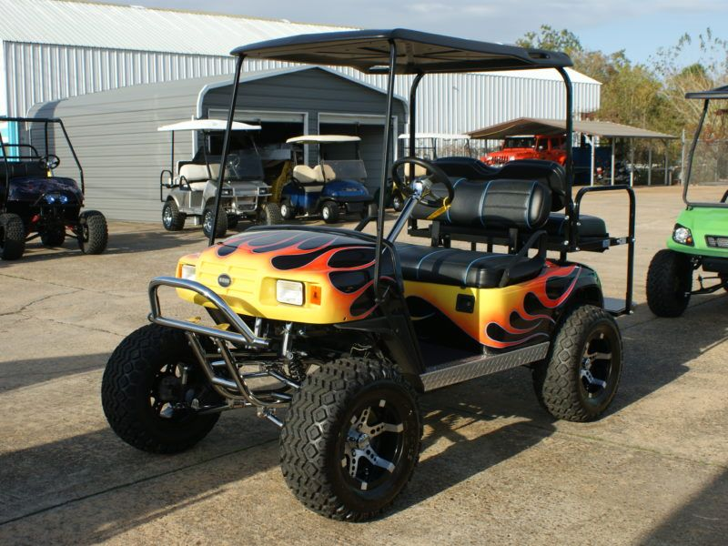

Parts & Service
Our service department is unmatched anywhere.
Service for any make, gas or electric
We can repair, rebuild or refurbish any golf cart or industrial vehicle from any manufacturer. Our staff are fully qualified, trained golf cart service professionals, working on electric and gas golf carts and utility vehicles.
Bring in your old, poor-performing golf cart, utility vehicle, people shuttle or sport trail vehicle and we'll bring it back up to new-performance standards.
Common reasons customers bring carts in
- New batteries
- Battery problems
- Recharging problems
- Electrical shorts
- Manufacturer-recommended service
- Checkups
- Engine tune-ups
Have a special situation or want feedback on a problem? Call the service department during business hours.
Office281-559-3171
Shop832-814-0452

Authorized parts & service dealer for
Battery care
Battery maintenance tips →We're an authorized Trojan Battery dealer and recommend Trojan golf cart batteries. Bring your cart in for battery testing, replacement and service.